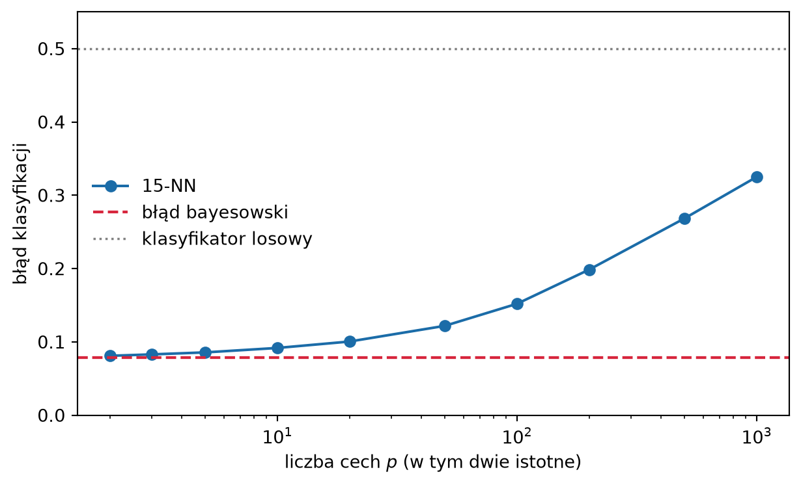

W rozdziale 2 ustaliliśmy, czego szukamy. Przy stracie kwadratowej optymalnym predyktorem jest funkcja regresji \(\fopt(\x) = \E(Y \mid \X = \x)\), a przy stracie 0–1 – klasyfikator bayesowski, który wskazuje klasę o największym prawdopodobieństwie warunkowym \(\eta_k(\x)\). Obie wielkości odwołują się jednak do nieznanego rozkładu \(P\). Ten rozdział przedstawia, jak oszacować je z danych niemal wprost z definicji.
Gdyby w próbie było wiele obserwacji o cechach dokładnie równych \(\x\), moglibyśmy uśrednić ich wyniki i otrzymać próbkowy odpowiednik średniej warunkowej. Przy cechach ciągłych taka sytuacja praktycznie nie występuje: w zbiorze uczącym zwykle nie ma ani jednej obserwacji z \(\X = \x\). Metoda \(k\) najbliższych sąsiadów (\(k\)-NN, ang. \(k\) nearest neighbors) zastępuje więc warunek „\(\X = \x\)” słabszym warunkiem „\(\X\) blisko \(\x\)” i uśrednia wyniki obserwacji leżących najbliżej. Ta jedna idea daje zarówno metodę regresji, jak i klasyfikacji.
Metoda nie zakłada niczego o postaci \(\fopt\) ani \(\eta_k\), a mimo to przy rosnącej liczbie danych zbliża się do optimum z poprzedniego rozdziału. Zobaczymy jednak również, gdzie leży jej granica: w wielu wymiarach „blisko” przestaje znaczyć to, co podpowiada intuicja. Przy okazji \(k\)-NN poznamy też pojęcia, które wrócą przy każdej kolejnej metodzie: dobór stopnia wygładzenia, rolę skali cech i przekleństwo wymiarowości.
3.1 Uśrednianie lokalne
Zacznijmy od regresji z jedną cechą. W sekcji 1.9 przewidywaliśmy cenę mieszkania o metrażu \(x\) jako średnią cen \(k\) mieszkań o najbliższym metrażu. Rysunek 3.1 pokazuje ten sam zabieg na danych symulowanych, dla których funkcję regresji znamy.
Rysunek 3.1: Uśrednianie lokalne. Szare punkty to próba ucząca, przerywana krzywa – prawdziwa funkcja regresji \(\fopt\). Aby przewidzieć wynik w punkcie \(x_0\), wybieramy \(k = 7\) obserwacji o cechach najbliższych \(x_0\) (zaznaczone na czerwono) i uśredniamy ich wyniki. Pozioma kreska pokazuje tę średnią na przedziale zajmowanym przez sąsiadów.
Średnia wyników sąsiadów (niebieski punkt) jest bliska prawdziwej wartości \(\fopt(x_0)\) (pusty punkt), choć nie jest jej równa. Rozbieżność ma dwie przyczyny. Pierwsza to szum: siedem obserwacji to mało, by uśrednić losowe odchylenia wyników. Druga to szerokość otoczenia: sąsiedzi leżą w pewnym przedziale wokół \(x_0\), a funkcja regresji nie jest na nim stała, więc uśredniamy wartości z jej okolicy, a nie z samego punktu \(x_0\). Zwiększenie \(k\) osłabia pierwszy efekt i wzmacnia drugi. Do tego problemu wrócimy w sekcji 3.4.
Otoczenie punktu \(x_0\) można wyznaczyć na dwa sposoby. Możemy ustalić promień \(h\) i uśredniać wszystkie obserwacje odległe od \(x_0\) o mniej niż \(h\). Możemy też ustalić liczbę obserwacji \(k\) i pozwolić, by promień wynikał z danych. Metoda \(k\)-NN wybiera drugą możliwość. Tam, gdzie danych jest dużo, otoczenie jest wąskie, a tam, gdzie mało – szerokie, ale nigdy puste. Przy ustalonym promieniu w obszarach o małej gęstości predykcja mogłaby opierać się na jednej obserwacji albo nie dać się wyznaczyć wcale.
3.2 Reguła \(k\) najbliższych sąsiadów
Niech \(\mathcal{D} = \{(\x_1, y_1), \dots, (\x_n, y_n)\}\) będzie zbiorem uczącym, w którym każda obserwacja jest opisana \(p\) cechami liczbowymi, \(\x_i \in \R^p\), a \(d\) – odległością w \(\R^p\). Dla punktu \(\x\) porządkujemy obserwacje uczące według odległości \(d(\x_i, \x)\) i przez \(N_k(\x)\) oznaczamy zbiór indeksów \(k\) obserwacji leżących najbliżej.
W regresji predykcją jest średnia wyników sąsiadów: \[
\widehat f(\x) = \frac{1}{k} \sum_{i \in N_k(\x)} y_i .
\tag{3.1}\] Jest to próbkowy odpowiednik średniej warunkowej: średnią po rozkładzie \(Y \mid \X = \x\) zastąpiliśmy średnią z próby po obserwacjach o cechach bliskich \(\x\). Ta sama zamiana działa dla innych strat. Przy stracie absolutnej optimum jest mediana warunkowa (Twierdzenie 2.3), więc jej lokalnym oszacowaniem jest mediana wyników sąsiadów (Zadanie 3.4).
W klasyfikacji szacujemy prawdopodobieństwa klas. Za \(\eta_c(\x) = \Prob(Y = c \mid \X = \x)\) podstawiamy częstość klasy \(c\) wśród sąsiadów: \[
\widehat\eta_c(\x) = \frac{1}{k} \sum_{i \in N_k(\x)} \ind(y_i = c).
\tag{3.2}\] Jest to szczególny przypadek (3.1): częstość klasy to średnia zmiennej wskaźnikowej \(\ind(Y = c)\), a jej wartość oczekiwana warunkowa to właśnie \(\eta_c(\x)\). Klasyfikator \(k\)-NN wskazuje klasę najczęstszą wśród sąsiadów: \[
\widehat g(\x) = \argmax_{c} \; \widehat\eta_c(\x).
\tag{3.3}\]
Porównanie (3.3) z regułą bayesowską (2.8) pokazuje, że \(k\)-NN ma tę samą postać, tylko z nieznanym prawdopodobieństwem warunkowym zastąpionym jego oszacowaniem. Taką konstrukcję nazywamy regułą podstawienia (ang. plug-in rule). Pierwsze takie reguły nieparametryczne, w tym regułę najbliższego sąsiada, zaproponowali i zbadali Fix i Hodges (1951).
Warto zauważyć, czego \(k\)-NN nie robi. W sekcji 1.8 opisaliśmy trening jako minimalizację ryzyka empirycznego w klasie modeli \(\mathcal{F}\). Metoda \(k\)-NN nie wybiera żadnej funkcji z ustalonej klasy i niczego nie minimalizuje. Naśladuje bezpośrednio postać optymalnego predyktora, wstawiając w miejsce średnich teoretycznych średnie lokalne. Ryzyko empiryczne pojawi się dopiero przy wyborze \(k\).
Ponieważ (3.2) daje prawdopodobieństwa, a nie tylko etykiety, można je podstawić do dowolnej reguły decyzyjnej z sekcji 2.5: do progu kosztowego (2.11) albo do reguły Chowa z opcją odmowy. Oszacowanie jest jednak grube. Przyjmuje tylko \(k + 1\) wartości \(0, 1/k, \dots, 1\), więc progi leżące między dwiema kolejnymi wielokrotnościami \(1/k\) dają te same decyzje (Zadanie 3.5). Przy \(k = 5\) progi \(0{,}65\) i \(0{,}75\) prowadzą do tej samej reguły, bo między nimi nie leży żadna wielokrotność \(1/5\).
AdnotacjaRemisy
Reguła (3.3) nie zawsze wskazuje jedną klasę. Dla dwóch klas remis w głosowaniu jest możliwy tylko przy parzystym \(k\), dlatego często wybiera się \(k\) nieparzyste. Przy większej liczbie klas remisu w ten sposób się nie uniknie. Druga możliwość to remis w odległościach: \(k\)-ty i \((k+1)\)-szy sąsiad leżą w tej samej odległości od \(\x\) i zbiór \(N_k(\x)\) nie jest wyznaczony jednoznacznie. Przy cechach ciągłych zdarza się to z prawdopodobieństwem zero, ale przy cechach dyskretnych bywa częste.
Implementacje rozstrzygają remisy umownie. W bibliotece scikit-learn przy remisie w głosowaniu wygrywa klasa występująca wcześniej w uporządkowanej liście klas, a przy remisie w odległościach wynik zależy od kolejności obserwacji w zbiorze uczącym. Dla teorii z sekcji 3.5 sposób rozstrzygania remisów nie ma znaczenia, dopóki nie faworyzuje systematycznie żadnej klasy.
3.3 Co znaczy „blisko”
Reguła \(k\)-NN wymaga odległości \(d\), a jej wybór należy do modelu tak samo jak wybór \(k\). Najczęściej używa się odległości euklidesowej \[
d(\x, \x') = \Big(\sum_{j=1}^{p} (x_j - x'_j)^2\Big)^{1/2},
\] rzadziej odległości miejskiej (Manhattan) \(\sum_{j} |x_j - x'_j|\). Obie są szczególnymi przypadkami odległości Minkowskiego \(\big(\sum_j |x_j - x'_j|^q\big)^{1/q}\), dla \(q = 2\) i \(q = 1\).
Każda z tych odległości sumuje różnice w poszczególnych cechach i dlatego zależy od jednostek, w których cechy wyrażono. Rozważmy mieszkania opisane metrażem w m² i liczbą pokoi. Mieszkania o metrażach \(50\) i \(52\) m² mające \(2\) i \(4\) pokoje dzieli odległość euklidesowa \(\sqrt{2^2 + 2^2} \approx 2{,}8\). Mieszkania o metrażach \(50\) i \(56\) m² z tą samą liczbą pokoi dzieli odległość \(6\). Pierwsza para jest więc „bliższa”, choć różni się układem mieszkania. Jeśli metraż zapiszemy w cm², różnica dwóch metrów kwadratowych urośnie do \(20\,000\) i liczba pokoi przestanie mieć jakikolwiek wpływ na wybór sąsiadów. Zmiana jednostek, która nie zmienia żadnej informacji w danych, zmienia predykcje \(k\)-NN.
Skali cech nie da się więc pozostawić przypadkowi. Najprostszym rozwiązaniem jest standaryzacja: od każdej cechy odejmujemy jej średnią i dzielimy przez odchylenie standardowe, tak by wszystkie cechy miały porównywalny rozrzut. Jeśli \(x_{ij}\) oznacza wartość \(j\)-tej cechy \(i\)-tej obserwacji uczącej, to dla każdej cechy \(j = 1, \dots, p\) wyznaczamy \[
\bar x_j = \frac{1}{n} \sum_{i=1}^{n} x_{ij}, \qquad
s_j = \Big(\frac{1}{n} \sum_{i=1}^{n} (x_{ij} - \bar x_j)^2\Big)^{1/2}
\] i zastępujemy cechę \(x_j\) dowolnego punktu \(\x\) wartością \[
\tilde x_j = \frac{x_j - \bar x_j}{s_j}.
\tag{3.4}\] Po tym przekształceniu każda cecha ma w zbiorze uczącym średnią \(0\) i odchylenie standardowe \(1\), a odległości liczymy między punktami \(\tilde\x\). Wielkości \(\bar x_j\) i \(s_j\) wyznaczamy tylko na zbiorze uczącym i tymi samymi wartościami przekształcamy nowe obserwacje. Wyznaczenie ich na danych, na których oceniamy model, byłoby subtelną formą podglądania danych testowych. Wrócimy do tego w rozdziale 5.
Rysunek 3.2 pokazuje skutek pominięcia standaryzacji. Klasę wyznacza tylko pierwsza cecha, o odchyleniu standardowym rzędu \(1\). Druga cecha nie niesie informacji o klasie, ale jej odchylenie standardowe wynosi \(100\).
Rysunek 3.2: Klasyfikator \(5\)-NN bez standaryzacji (po lewej) i ze standaryzacją (po prawej), \(n = 300\). Klasę wyznacza tylko cecha 1. Cecha 2 jest szumem o odchyleniu standardowym \(100\), więc bez standaryzacji to ona decyduje o tym, kto jest czyim sąsiadem. Oba panele narysowano w zmiennych standaryzowanych; tło pokazuje oszacowanie \(\widehat\eta(\x)\), a w tytule podano błąd na dużym zbiorze testowym.
Bez standaryzacji o wyborze sąsiadów decyduje niemal wyłącznie cecha 2, która nie niesie informacji o klasie. Sąsiedzi są więc dobierani tak, jakby klasy nie było. Tło lewego panelu układa się w poziome pasy: oszacowanie \(\widehat\eta\) zmienia się wraz z cechą nieistotną, a prawie nie zmienia wraz z istotną. Po standaryzacji obie cechy ważą tyle samo i granica decyzyjna wyraźnie zależy od cechy 1.
Prawy panel pokazuje jednak także drugi problem. Cecha 2 nadal jest szumem i nadal wpływa na odległości, choć już nie dominuje: granica nie jest pionowa, lecz poszarpana. Przy jednej takiej cesze strata jest niewielka, a błąd jest bliski błędowi bayesowskiemu \(\Phi(-1) \approx 0{,}159\). Standaryzacja wyrównuje jednak tylko skale. Nie potrafi odróżnić cech istotnych od nieistotnych: z punktu widzenia odległości każda cecha jest równie ważna. Z każdą kolejną cechą nieistotną problem się nasila, co omówimy w sekcji 3.6.
Cechy jakościowe wymagają osobnej decyzji. Typowym rozwiązaniem jest zakodowanie każdej kategorii osobną zmienną zero-jedynkową. Odległość między dwiema obserwacjami zależy wtedy od liczby cech, w których się różnią (dla cech wyłącznie jakościowych jest to tzw. odległość Hamminga), a względną wagę cech jakościowych i ilościowych trzeba ustalić świadomie.
3.4 Rola liczby sąsiadów
Parametr \(k\) jest hiperparametrem: nie jest wyznaczany z danych w trakcie uczenia, tylko ustalany przed nim (por. Zadanie 1.5). Jego wpływ najłatwiej zrozumieć na przypadkach skrajnych.
Dla \(k = 1\) predykcją jest wynik jednej, najbliższej obserwacji. Dla punktów ze zbioru uczącego najbliższym sąsiadem jest sam punkt, więc błąd na zbiorze uczącym wynosi zero (Zadanie 1.6). Nie wynika z tego nic dobrego o ryzyku. Predykcja w nowym punkcie przejmuje cały szum jednej obserwacji, a granica decyzyjna otacza każdy punkt uczący, także taki, którego klasa jest w swoim otoczeniu nietypowa.
Dla \(k = n\) sąsiadami każdego punktu jest cały zbiór uczący. Predykcja nie zależy wtedy od \(\x\): w regresji jest średnią wszystkich wyników, w klasyfikacji – klasą najczęstszą w próbie (Zadanie 3.3). Taki predyktor jest bardzo stabilny, ale ignoruje cechy.
Między tymi skrajnościami \(k\) reguluje stopień wygładzenia. Rysunek 3.3 pokazuje to na klasycznym zbiorze dwóch półksiężyców.
Rysunek 3.3: Klasyfikator \(k\)-NN dla \(k = 1, 15, 100\) na zbiorze dwóch półksiężyców (\(n = 200\), szum \(0{,}30\)). Tło pokazuje oszacowanie \(\widehat\eta(\x)\), czarna linia – granicę decyzyjną \(\widehat\eta(\x) = 1/2\). W tytułach podano błąd na zbiorze uczącym i na dużym zbiorze testowym z tego samego rozkładu.
Dla \(k = 1\) granica jest poszarpana i tworzy wysepki wokół pojedynczych punktów. Błąd uczący wynosi zero, ale błąd testowy jest wyraźnie większy niż dla \(k = 15\). Granica dla \(k = 15\) oddaje kształt półksiężyców i nie reaguje na pojedyncze obserwacje. Dla \(k = 100\), czyli połowy próby, otoczenia są tak szerokie, że sięgają do drugiego półksiężyca, granica się wypłaszcza, a błąd znów rośnie – tym razem zarówno testowy, jak i uczący.
To samo widać w regresji (Rysunek 3.4). Wykres predyktora (3.1) jest funkcją schodkową: zmienia wartość tylko wtedy, gdy zmienia się zbiór sąsiadów. Przy małym \(k\) schodki są gęste i podążają za szumem, przy dużym – predyktor spłaszcza funkcję regresji, najmocniej przy krańcach przedziału, gdzie sąsiedzi leżą tylko po jednej stronie punktu.
Rysunek 3.4: Regresja \(k\)-NN dla \(k = 1, 10, 50\) na tej samej próbie (\(n = 100\)). Przerywana krzywa to funkcja regresji \(\fopt\), niebieska – predyktor \(\widehat f\).
Zależność ryzyka od \(k\) można w tym przykładzie policzyć dokładnie, bo rozkład znamy. Cecha ma rozkład jednostajny na \([0, 1]\), więc rozkład ryzyka (2.7) przyjmuje postać \[
\Risk(\widehat f) = \int_0^1 \big(\fopt(x) - \widehat f(x)\big)^2 \, dx + \sigma^2 ,
\] a całkę liczymy numerycznie. Rysunek 3.5 zestawia tak policzone ryzyko z błędem na zbiorze uczącym. Oś poziomą opisaliśmy wielkością \(n/k\). Przybliża ona liczbę grup obserwacji, w obrębie których predyktor uśrednia, i bywa nazywana efektywną liczbą parametrów metody (Hastie i in. 2009, rozdz. 2.3). Na prawo od osi rośnie więc elastyczność modelu.
Rysunek 3.5: Błąd na zbiorze uczącym i ryzyko regresji \(k\)-NN w zależności od \(n/k\) (\(n = 100\)). Ryzyko policzono dokładnie, całkując po znanym rozkładzie. Punkty to średnie z 50 niezależnych prób uczących. Przerywana linia to błąd nieredukowalny \(\sigma^2\).
Błąd uczący maleje monotonicznie wraz ze wzrostem elastyczności i dla \(k = 1\) spada do zera. Ryzyko zachowuje się inaczej: najpierw maleje, potem rośnie, a najmniejsze jest przy pośredniej wartości \(k\). Na lewym krańcu wykresu predyktor jest zbyt sztywny, by odtworzyć kształt \(\fopt\), na prawym – odtwarza głównie szum. Krzywa w kształcie litery U to obraz kompromisu, który w rozdziale 4 rozłożymy na dwa składniki: obciążenie i wariancję.
Wykres prowadzi też do problemu praktycznego. Najlepsze \(k\) widzimy tylko dlatego, że znamy rozkład. W zastosowaniach mamy jedynie błąd uczący, który wskazuje zawsze \(k = 1\), a więc wybór najgorszy z możliwych. Jak wybrać \(k\), mając tylko dane, omówimy w rozdziale 5.
3.5 Zbieżność do optimum
W Rysunek 2.2 ryzyko klasyfikatora \(k\)-NN z \(k = \sqrt{n}\) zbliżało się do błędu bayesowskiego wraz ze wzrostem próby. Nie był to przypadek wybranego rozkładu. Dla obu zadań, regresji i klasyfikacji, zachodzi następujący wynik (Stone 1977).
Twierdzenie 3.1 (Zgodność uniwersalna \(k\)-NN) Niech liczba sąsiadów \(k = k_n\) zależy od liczności próby \(n\) tak, że \[
k_n \to \infty
\qquad\text{oraz}\qquad
\frac{k_n}{n} \to 0
\qquad\text{przy } n \to \infty .
\] Wtedy dla każdego rozkładu \((\X, Y)\):
w klasyfikacji ryzyko klasyfikatora (3.3) dąży do błędu bayesowskiego, \(\E \Risk(\widehat g_n) \to \Risk(\Bayes)\);
w regresji, jeśli \(\E Y^2 < \infty\), ryzyko predyktora (3.1) przy stracie kwadratowej dąży do ryzyka funkcji regresji, \(\E \Risk(\widehat f_n) \to \Risk(\fopt)\).
Wartość oczekiwana \(\E\) dotyczy tu losowości zbioru uczącego.
Dowód wymaga sporo techniki i go pomijamy; pełne ujęcie podają Devroye i in. (1996) dla klasyfikacji i Györfi i in. (2002) dla regresji. Rolę obu warunków łatwo jednak zrozumieć, wracając do dwóch źródeł błędu z Rysunek 3.1. Warunek \(k_n \to \infty\) sprawia, że uśredniamy coraz więcej obserwacji, więc szum wyników przestaje mieć znaczenie. Warunek \(k_n / n \to 0\) sprawia, że sąsiedzi stanowią coraz mniejszy ułamek próby, więc ich otoczenie kurczy się do punktu \(\x\) i różnice między \(\fopt(\x_i)\) a \(\fopt(\x)\) znikają. Wybór \(k = \sqrt{n}\) spełnia oba warunki.
Siła twierdzenia leży w słowie „każdego”. Nie zakładamy ciągłości funkcji regresji, postaci rozkładów klas ani istnienia gęstości. Metodę o tej własności nazywamy uniwersalnie zgodną. Jest to zarazem odpowiedź na wątpliwość z rozdziału 2: optimum, którego nie można wyznaczyć bez znajomości rozkładu, można osiągnąć w granicy, mając tylko dane.
Co się dzieje, gdy \(k\) nie rośnie? Dla reguły jednego najbliższego sąsiada odpowiedź podali Cover i Hart (1967).
Twierdzenie 3.2 (Twierdzenie Covera–Harta) Rozważmy dwie klasy i niech \(\Risk^*\) oznacza błąd bayesowski. Przy łagodnych założeniach o regularności rozkładu ryzyko reguły jednego najbliższego sąsiada dąży przy \(n \to \infty\) do granicy \[
\Risk_{1\text{NN}} = \E\big[\,2\,\eta(\X)\big(1 - \eta(\X)\big)\big],
\tag{3.5}\] która spełnia \[
\Risk^* \;\le\; \Risk_{1\text{NN}} \;\le\; 2 \Risk^* (1 - \Risk^*)
\;\le\; 2 \Risk^* .
\tag{3.6}\]
Dowód. Podajemy szkic, pomijając część techniczną. Przy rosnącym \(n\) najbliższy sąsiad punktu \(\x\) leży coraz bliżej \(\x\), więc jego prawdopodobieństwo klasy zbliża się do \(\eta(\x)\). Etykieta sąsiada i nieznana etykieta punktu \(\x\) są niezależnymi losowaniami z tego samego rozkładu dwupunktowego. Różnią się z prawdopodobieństwem \[
\eta(\x)\big(1 - \eta(\x)\big) + \big(1 - \eta(\x)\big)\eta(\x)
= 2\,\eta(\x)\big(1 - \eta(\x)\big).
\] Uśrednienie po rozkładzie \(\X\) daje (3.5).
Do nierówności oznaczmy \(r(\x) = \min\big(\eta(\x), 1 - \eta(\x)\big)\); z (2.9) \(\Risk^* = \E\, r(\X)\). Ponieważ \(2\eta(1-\eta) = 2r(1-r)\), mamy \(\Risk_{1\text{NN}} = \E\big[2 r(\X)(1 - r(\X))\big]\). Lewa nierówność wynika z \(r \le \tfrac12\), czyli \(2(1 - r) \ge 1\). Dla prawej zauważmy, że \(\E\big[2r(1-r)\big] = 2\E r - 2\E r^2\), a z nierówności Jensena \(\E r^2 \ge (\E r)^2\), więc \(\Risk_{1\text{NN}} \le 2\Risk^* - 2(\Risk^*)^2\). \(\square\)
Wynik ma prostą interpretację. Reguła, która nie uśrednia niczego, myli się asymptotycznie co najwyżej dwa razy częściej niż reguła optymalna. Mówi się czasem, że połowa informacji potrzebnej do klasyfikacji zawarta jest w etykiecie najbliższego sąsiada. Zarazem 1-NN nie jest zgodna: jeśli \(\Risk^* > 0\), jej ryzyko nie spada do \(\Risk^*\) nawet przy nieskończonej próbie, bo etykieta jednego sąsiada pozostaje losowa. Dopiero uśrednianie rosnącej liczby sąsiadów usuwa tę losowość.
Rysunek 3.6 sprawdza oba twierdzenia na rozkładzie z Rysunek 2.2: dwie równoliczne klasy \(\Nrozk(\pm 1, 1)\), dla których \(\Risk^* = \Phi(-1) \approx 0{,}159\). Granicę (3.5) można tu policzyć numerycznie: wynosi około \(0{,}225\), a ograniczenie górne (3.6) – około \(0{,}267\).
Rysunek 3.6: Ryzyko reguły 1-NN i reguły \(k\)-NN z \(k = \sqrt{n}\) w zależności od liczności próby, dla dwóch klas \(\Nrozk(\pm 1, 1)\). Ryzyko policzono dokładnie, całkując po znanym rozkładzie; punkty to średnie z 25 prób uczących. Linie poziome: błąd bayesowski \(\Risk^*\), granica ryzyka 1-NN z twierdzenia Covera–Harta i jej ograniczenie górne \(2\Risk^*(1-\Risk^*)\).
Ryzyko 1-NN szybko stabilizuje się na poziomie granicy (3.5) i dalsze dane już go nie zmniejszają. Ryzyko reguły z \(k = \sqrt{n}\) schodzi poniżej tej granicy i powoli zbliża się do \(\Risk^*\), zgodnie z Twierdzenie 3.1.
OstrzeżenieZbieżność nie znaczy „szybko”
Twierdzenie 3.1 mówi, dokąd zmierza ryzyko, ale nie mówi, jak szybko. Bez założeń o rozkładzie żadnej gwarancji tempa być nie może: dla dowolnej reguły klasyfikacji i dowolnie wolno malejącego ciągu istnieją rozkłady, dla których ryzyko zbliża się do \(\Risk^*\) jeszcze wolniej (Devroye i in. 1996, rozdz. 7). Uniwersalność ma swoją cenę.
Gdy funkcja regresji jest gładka, tempo da się oszacować, ale zależy ono od liczby cech \(p\) i maleje wraz z nią. W jednym wymiarze, jak na powyższym rysunku, kilkaset obserwacji wystarcza. W wielu wymiarach potrzebna liczba obserwacji rośnie tak szybko, że gwarancja asymptotyczna traci praktyczne znaczenie. Wyjaśnia to następna sekcja.
3.6 Przekleństwo wymiarowości
Metoda \(k\)-NN opiera się na założeniu, że w zbiorze uczącym są obserwacje bliskie punktowi \(\x\), a więc takie, dla których \(\fopt\) lub \(\eta\) mają podobne wartości. W jednym czy dwóch wymiarach to założenie jest łatwe do spełnienia. Wraz z liczbą cech \(p\) przestaje być spełnione, nawet przy bardzo dużych próbach. Zjawisko to nazywamy przekleństwem wymiarowości (ang. curse of dimensionality). Pokażemy trzy jego przejawy.
3.6.1 Otoczenie przestaje być lokalne
Niech cechy mają rozkład jednostajny w kostce \([0, 1]^p\). Chcemy, aby otoczenie punktu obejmowało ułamek \(r\) wszystkich obserwacji, na przykład \(r = 0{,}01\) przy \(k = 10\) i \(n = 1000\). Jeśli otoczenie jest mniejszą kostką o boku \(b\), to obejmuje ułamek objętości \(b^p\), więc \[
b = r^{1/p} .
\tag{3.7}\] W jednym wymiarze bok wynosi \(0{,}01\), czyli otoczenie jest naprawdę lokalne. W dwóch – \(0{,}1\). W dziesięciu wymiarach bok wynosi już \(0{,}01^{1/10} \approx 0{,}63\): aby zebrać \(1\%\) danych, musimy objąć \(63\%\) zakresu każdej cechy. W stu wymiarach bok wynosi \(0{,}955\). „Otoczenie” obejmuje wtedy prawie cały zakres każdej zmiennej, a uśrednianie po nim przestaje być lokalne (Hastie i in. 2009, rozdz. 2.5).
Odwracając rachunek: aby otoczenie miało bok \(b = 0{,}1\) i zawierało średnio \(10\) obserwacji, potrzebujemy \(n = 10 \cdot 10^{p}\) obserwacji. Dla \(p = 2\) to tysiąc, dla \(p = 10\) – sto miliardów (Zadanie 3.7). Liczba potrzebnych obserwacji rośnie wykładniczo z wymiarem.
3.6.2 Objętość ucieka do narożników i brzegów
W jednym wymiarze odcinek \([-\tfrac12, \tfrac12]\) i „kula” o promieniu \(\tfrac12\) to ten sam zbiór. W dwóch wymiarach koło wpisane w kwadrat zajmuje \(\pi/4 \approx 79\%\) jego pola, w trzech kula wpisana w sześcian – \(52\%\) objętości. W dziesięciu wymiarach ten udział spada do \(0{,}25\%\), a w dwudziestu do około \(2{,}5 \cdot 10^{-8}\) (Zadanie 3.6). Niemal cała objętość kostki leży w jej narożnikach, daleko od środka.
Podobnie jest z brzegami. W kuli o promieniu \(1\) warstwa przy powierzchni o grubości \(\varepsilon\) zajmuje ułamek \(1 - (1 - \varepsilon)^p\) objętości. Dla \(\varepsilon = 0{,}05\) jest to \(5\%\) w jednym wymiarze, \(40\%\) w dziesięciu i ponad \(99\%\) w stu. Punkty losowane jednostajnie leżą więc prawie wszystkie blisko brzegu, a predykcja w punkcie przy brzegu opiera się na sąsiadach leżących tylko po jednej jego stronie – jak na krańcach przedziału w Rysunek 3.4.
Rysunek 3.7: Geometria wysokich wymiarów. Po lewej: bok kostki-otoczenia, które obejmuje ułamek \(r\) danych jednostajnych w \([0,1]^p\), według wzoru \(b = r^{1/p}\). Po prawej: ułamek objętości kostki zajmowany przez kulę wpisaną (oś pionowa w skali logarytmicznej).
3.6.3 Odległości przestają się różnić
Trzeci przejaw jest dla \(k\)-NN najgroźniejszy. Wylosujmy \(n\) punktów jednostajnie z kostki \([0, 1]^p\) i dla nowego punktu porównajmy odległość do najbliższego i najdalszego z nich. W jednym wymiarze najbliższy punkt jest setki razy bliżej niż najdalszy. Wraz ze wzrostem \(p\) iloraz tych odległości zbliża się do jedności (Rysunek 3.8): wszystkie punkty są od nowego punktu mniej więcej tak samo daleko. Zjawisko to, nazywane koncentracją odległości, zachodzi dla szerokiej klasy rozkładów, w których cechy nie są silnie zależne (Beyer i in. 1999). Gdy wszyscy są niemal równo odlegli, „najbliższy sąsiad” jest wyznaczony przez drobne, przypadkowe różnice i przestaje nieść informację o \(\x\).
Rysunek 3.8: Koncentracja odległości. Dla \(n = 1000\) punktów jednostajnych w \([0,1]^p\) i losowego punktu zapytania pokazano iloraz odległości do najbliższego i najdalszego punktu (średnia z 50 punktów zapytania). Gdy iloraz zbliża się do \(1\), najbliższy i najdalszy sąsiad są od punktu niemal tak samo odlegli.
3.6.4 Skutek dla klasyfikacji
Połączmy te obserwacje z problemem z Rysunek 3.2. Weźmy dwie cechy istotne, w których klasy są dobrze rozdzielone, i dołączajmy do nich kolejne cechy będące czystym szumem, o tej samej skali. Klasyfikator bayesowski ignoruje szum, więc błąd bayesowski się nie zmienia. Metoda \(k\)-NN szumu zignorować nie potrafi, bo każda cecha wnosi swój wkład do odległości. Rysunek 3.9 pokazuje wynik.
Kod
rng = np.random.default_rng(29)a =1.0# klasy mają środki (a, a) i (-a, -a) w dwóch cechach istotnychdef probka_szum(n, liczba_szumowych, rng):"""Dwie cechy istotne i podana liczba cech szumowych N(0, 1).""" y = rng.integers(0, 2, n) srodek = np.where(y ==1, a, -a)[:, None] istotne = rng.normal(srodek, 1.0, (n, 2)) szum = rng.normal(0, 1.0, (n, liczba_szumowych))return np.hstack([istotne, szum]), y# Rzut na kierunek (1, 1)/sqrt(2) daje N(+-a*sqrt(2), 1).blad_bayesa_2d = norm.cdf(-a * np.sqrt(2))liczby_szumowych = np.array([0, 1, 3, 8, 18, 48, 98, 198, 498, 998])powtorzenia =5bledy = np.empty((len(liczby_szumowych), powtorzenia))for i, m inenumerate(liczby_szumowych):for j inrange(powtorzenia): X_tr, y_tr = probka_szum(500, m, rng) X_te, y_te = probka_szum(10_000, m, rng) klf = KNeighborsClassifier(n_neighbors=15).fit(X_tr, y_tr) bledy[i, j] = np.mean(klf.predict(X_te) != y_te)fig, ax = plt.subplots(figsize=(6.5, 4.0))ax.plot(liczby_szumowych +2, bledy.mean(axis=1), "o-", color="#1B6CA8", label="15-NN")ax.axhline(blad_bayesa_2d, color="#D7263D", ls="--", lw=1.6, label="błąd bayesowski")ax.axhline(0.5, color="0.5", ls=":", lw=1.3, label="klasyfikator losowy")ax.set_xscale("log")ax.set_xlabel("liczba cech $p$ (w tym dwie istotne)")ax.set_ylabel("błąd klasyfikacji")ax.set_ylim(0, 0.55)ax.legend(frameon=False)plt.tight_layout()plt.show()

Rysunek 3.9: Błąd klasyfikatora \(15\)-NN w zależności od łącznej liczby cech \(p\) (\(n = 500\), średnia z 5 prób uczących, błąd na zbiorze testowym liczności \(10\,000\)). Klasy różnią się tylko w dwóch pierwszych cechach, pozostałe \(p - 2\) cech to szum. Linie poziome: błąd bayesowski, który nie zależy od cech nieistotnych, oraz błąd klasyfikatora losowego.
Kilka cech szumowych prawie nie szkodzi. Przy stu cechach błąd jest już około dwukrotnie większy od bayesowskiego, a przy tysiącu pokonał ponad połowę drogi od błędu bayesowskiego do zgadywania. Tymczasem informacja potrzebna do dobrej klasyfikacji jest w danych cały czas obecna i zawsze w tych samych dwóch kolumnach. Metoda po prostu nie ma sposobu, by się o tym dowiedzieć.
3.6.5 Co z tego wynika
Przekleństwo wymiarowości nie przeczy Twierdzenie 3.1. Twierdzenie nadal obowiązuje, ale liczba obserwacji, przy której jego teza staje się odczuwalna, rośnie z wymiarem tak szybko, że w praktyce jest nieosiągalna. Metoda, która nie zakłada nic o postaci zależności, musi każdą jej cechę „odkryć” w danych, a w wielu wymiarach na to brakuje danych.
Wyjściem są założenia strukturalne. Model liniowy zakłada, że wpływ każdej cechy jest stały i addytywny. Dzięki temu szacuje \(p + 1\) współczynników zamiast wypełniać obserwacjami całą przestrzeń cech. Jeśli założenie jest w przybliżeniu prawdziwe, model liniowy wygrywa z \(k\)-NN już przy umiarkowanym \(p\)(James i in. 2023, rozdz. 3.5). Od tego zaczyna się część II książki (Rozdział 6).
WskazówkaDlaczego \(k\)-NN mimo to bywa skuteczny
Rachunki tej sekcji dotyczą danych rozłożonych jednostajnie we wszystkich wymiarach. Dane rzeczywiste rzadko tak wyglądają. Cechy są zwykle silnie skorelowane, a obserwacje skupiają się w pobliżu struktur o znacznie mniejszym wymiarze niż \(p\): zdjęcia twarzy zajmują znikomą część przestrzeni wszystkich obrazów o danej liczbie pikseli. O trudności zadania decyduje wtedy ten wymiar wewnętrzny, a nie liczba kolumn. Do wyznaczania takich struktur służą metody z części V (Rozdział 14).
3.7 Metoda \(k\)-NN w praktyce
Koszt obliczeniowy. Uczenie \(k\)-NN polega na zapamiętaniu zbioru uczącego i nic nie kosztuje. Koszt przenosi się na predykcję: naiwne wyszukanie sąsiadów jednego punktu wymaga obliczenia \(n\) odległości w \(p\) wymiarach, czyli czasu rzędu \(np\). Przy dużych zbiorach stosuje się struktury danych przyspieszające wyszukiwanie, takie jak drzewa \(k\)-d i drzewa kul (w scikit-learn parametr algorithm). W małej liczbie wymiarów działają one znacznie szybciej niż przegląd wszystkich punktów, w dużej – z powodów opisanych w sekcji 3.6 – tracą przewagę. W bardzo dużych zbiorach używa się wyszukiwania przybliżonego, które zwraca punkty bliskie, choć niekoniecznie najbliższe.
Model to dane. W sekcji 1.9 zauważyliśmy, że opis dopasowanego modelu \(k\)-NN obejmuje cały zbiór uczący. Ma to konsekwencje praktyczne: model zajmuje tyle pamięci co dane, a jego udostępnienie oznacza udostępnienie danych, co bywa wykluczone, gdy dotyczą one osób.
Ważenie sąsiadów. We wzorze (3.1) wszyscy sąsiedzi ważą tyle samo, także ten, który ledwo zmieścił się w otoczeniu. Często stosowanym wariantem jest ważenie wyników odwrotnością odległości (w scikit-learn weights="distance"). Przy takim ważeniu punkt uczący pokrywający się z \(\x\) przejmuje całą wagę, więc błąd na zbiorze uczącym znów wynosi zero niezależnie od \(k\).
Typowe użycie. Standaryzację i klasyfikator łączymy w potok (Pipeline). Potok gwarantuje, że parametry standaryzacji wyznaczane są wyłącznie na danych przekazanych do fit, a przy predykcji stosowane bez zmian. Poniższy przykład porównuje oba warianty na zbiorze danych o nowotworach piersi dołączonym do scikit-learn: \(569\) obserwacji i \(30\) cech mierzonych w bardzo różnych skalach.
Kod
from sklearn.datasets import load_breast_cancerfrom sklearn.model_selection import train_test_splitX, y = load_breast_cancer(return_X_y=True)X_tr, X_te, y_tr, y_te = train_test_split(X, y, test_size=0.3, random_state=0, stratify=y)print("rozrzut cech (odchylenia standardowe):",f"od {X_tr.std(axis=0).min():.3g} do {X_tr.std(axis=0).max():.3g}")for nazwa, model in [ ("bez standaryzacji", KNeighborsClassifier(n_neighbors=10)), ("ze standaryzacją ", make_pipeline(StandardScaler(), KNeighborsClassifier(n_neighbors=10))),]: model.fit(X_tr, y_tr) blad = np.mean(model.predict(X_te) != y_te)print(f"{nazwa}: błąd na zbiorze testowym {blad:.3f}")# Prawdopodobieństwa klas dla trzech pierwszych obserwacji testowych.print(model.predict_proba(X_te[:3]))
rozrzut cech (odchylenia standardowe): od 0.00231 do 577
bez standaryzacji: błąd na zbiorze testowym 0.076
ze standaryzacją : błąd na zbiorze testowym 0.064
[[1. 0. ]
[0.1 0.9]
[1. 0. ]]
Metoda predict_proba zwraca oszacowania (3.2), które można podstawić do reguły kosztowej zamiast używać domyślnego progu \(1/2\). Wartość \(k = 10\) przyjęliśmy tu arbitralnie. Jak ją wybrać na podstawie danych i jak rzetelnie ocenić błąd tak wybranego modelu, omówimy w rozdziale 5.
Uwagi bibliograficzne
Metodę \(k\) najbliższych sąsiadów w ujęciu bliskim temu rozdziałowi przedstawiają James i in. (2023, rozdz. 2.2) oraz Hastie i in. (2009, rozdz. 2.3). W drugiej z tych książek można też znaleźć analizę przekleństwa wymiarowości dla metod lokalnych (Hastie i in. 2009, rozdz. 2.5) i omówienie klasyfikatorów \(k\)-NN w zastosowaniach (Hastie i in. 2009, rozdz. 13.3). Porównanie regresji \(k\)-NN z regresją liniową w zależności od liczby cech zawiera James i in. (2023, rozdz. 3.5).
Ścisłą teorię reguł najbliższych sąsiadów w klasyfikacji, z dowodami twierdzenia Stone’a i twierdzenia Covera–Harta oraz wynikami o braku uniwersalnego tempa zbieżności, wykładają Devroye i in. (1996). Analogiczną teorię dla regresji, łącznie z tempem zbieżności dla funkcji gładkich i jego zależnością od wymiaru, podają Györfi i in. (2002).
Regułę najbliższego sąsiada wprowadzili w raporcie z 1951 roku Fix i Hodges (1951), którzy wykazali też jej zgodność przy rosnącym \(k\). Raport przedrukowano w 1989 roku w International Statistical Review. Cover i Hart (1967) udowodnili ograniczenie przez podwojony błąd bayesowski, a Stone (1977) – zgodność uniwersalną szerokiej klasy reguł uśredniania lokalnego, obejmującej \(k\)-NN. Zjawisko koncentracji odległości i jego skutki dla wyszukiwania najbliższych sąsiadów badają Beyer i in. (1999).
Zadania
Zadanie 3.1 Zbiór uczący składa się z sześciu obserwacji o dwóch cechach:
\(i\)
\(x_1\)
\(x_2\)
klasa
\(y\)
1
1
1
A
2,0
2
2
1
A
2,5
3
4
3
B
5,0
4
5
4
B
6,5
5
2
3
B
4,0
6
3
2
A
3,5
Dla punktu \(\x = (1, 3)\) wyznacz odległości euklidesowe do wszystkich obserwacji i zbiory \(N_1(\x)\), \(N_3(\x)\).
Podaj predykcję klasy dla \(k = 1\) i \(k = 3\) oraz oszacowanie \(\widehat\eta_{\mathrm{B}}(\x)\) dla \(k = 3\).
Traktując \(y\) jako zmienną wynikową, podaj predykcję regresji \(k\)-NN dla \(k = 1\) i \(k = 3\).
Powtórz punkt a) dla odległości miejskiej. Czy zbiory sąsiadów się zmieniają? Jak rozstrzygnąć ewentualny remis?
Zadanie 3.2 W zbiorze z Zadanie 3.1 cecha \(x_2\) jest mierzona w metrach. Przelicz ją na centymetry i powtórz punkt b) tego zadania. Następnie standaryzuj obie cechy (średnie i odchylenia wyznacz na zbiorze uczącym) i powtórz obliczenia raz jeszcze. Która z trzech wersji daje „właściwych” sąsiadów? Podaj przykład sytuacji, w której standaryzacja pogarsza wynik \(k\)-NN. (Wskazówka: Rysunek 3.2.)
Zadanie 3.3 Wykaż, że dla \(k = n\) regresja \(k\)-NN przewiduje w każdym punkcie średnią \(\bar y\), a klasyfikacja – klasę najczęstszą w próbie. Dla dwóch klas z \(\pi = \Prob(Y = 1) > \tfrac12\) wyznacz granicę ryzyka tego klasyfikatora przy \(n \to \infty\) i porównaj ją z błędem bayesowskim, zapisanym przez \(\eta\). Kiedy oba błędy są równe? Odnieś wynik do Zadanie 2.4.
Zadanie 3.4 Zmodyfikuj przykład z Rysunek 3.4 tak, aby \(10\%\) wyników zastąpić wartościami odstającymi, na przykład \(y_i + 5\). Zaimplementuj regresję \(k\)-NN, która zamiast średniej zwraca medianę wyników sąsiadów, i porównaj ją z (3.1) dla \(k = 15\): na wykresie oraz pod względem ryzyka przy stracie kwadratowej i absolutnej, liczonego względem rozkładu bez obserwacji odstających. Wyjaśnij wynik, odwołując się do Twierdzenie 2.3.
Zadanie 3.5 Klasyfikator \(k\)-NN z \(k = 5\) zwraca oszacowania \(\widehat\eta(\x) \in \{0, \tfrac15, \dots, 1\}\).
Pominięcie przypadku pozytywnego kosztuje dziesięć razy więcej niż fałszywy alarm. Korzystając z (2.11), wyznacz próg i zapisz otrzymaną regułę w postaci „klasa 1, jeśli wśród pięciu sąsiadów jest co najmniej \(j\) przypadków pozytywnych”.
Ile różnych reguł decyzyjnych można otrzymać, zmieniając próg w przedziale \((0, 1)\)? Wskaż przedziały progów dających tę samą regułę.
Jak zmienia się odpowiedź dla \(k = 50\)? Jaki wniosek płynie stąd dla doboru \(k\), gdy oszacowania \(\widehat\eta\) mają służyć regule kosztowej lub regule Chowa?
Zadanie 3.6 Objętość kuli o promieniu \(\rho\) w \(\R^p\) wynosi \(V_p(\rho) = \dfrac{\pi^{p/2}}{\Gamma(p/2 + 1)}\, \rho^p\).
Wyznacz ułamek objętości kostki \([-\tfrac12, \tfrac12]^p\) zajmowany przez kulę wpisaną i sprawdź wartości podane w sekcji 3.6 dla \(p = 2, 3, 10\).
Korzystając ze wzoru Stirlinga, wykaż, że ten ułamek dąży do zera przy \(p \to \infty\), i to szybciej niż dowolny ciąg geometryczny.
Wyznacz odległość od środka kostki do jej wierzchołka. Jak zmienia się ona z \(p\) w porównaniu z promieniem kuli wpisanej?
Zadanie 3.7 Dane mają rozkład jednostajny w \([0, 1]^p\).
Ilu obserwacji potrzeba, aby kostka o boku \(0{,}1\) wokół punktu zawierała średnio \(10\) obserwacji? Podaj wynik dla \(p = 1, 2, 5, 10\).
Przy \(n = 10^6\) i \(k = 10\) wyznacz bok otoczenia (3.7) dla \(p = 2, 10, 50\).
Zakładając, że funkcja regresji spełnia \(|\fopt(\x) - \fopt(\x')| \le L \max_j |x_j - x'_j|\), oszacuj z góry błąd, jaki wnosi do predykcji samo uśrednianie po otoczeniu o boku \(b\). Co ten rachunek mówi o \(k\)-NN dla \(p = 50\)?
Zadanie 3.8 Rozważ dwie równoliczne klasy \(\Nrozk(-\mu, 1)\) i \(\Nrozk(\mu, 1)\) na prostej.
Wyznacz \(\eta(x)\) i wykaż, że \(2\eta(x)\big(1 - \eta(x)\big) = \dfrac{1}{2\cosh^2(\mu x)}\). (Wskazówka: zapisz \(\eta\) przez funkcję logistyczną.)
Policz numerycznie granicę (3.5) oraz ograniczenie \(2\Risk^*(1 - \Risk^*)\) dla \(\mu \in \{0{,}25;\ 0{,}5;\ 1;\ 2;\ 3\}\). Dla jakich \(\mu\) ograniczenie jest bliskie granicy, a dla jakich luźne?
Sprawdź wynik symulacyjnie, modyfikując kod Rysunek 3.6.
Podaj rozkład, dla którego w (3.6) zachodzi równość \(\Risk_{1\text{NN}} = 2\Risk^*(1 - \Risk^*)\). (Wskazówka: kiedy nierówność Jensena jest równością?)
Beyer, Kevin, Jonathan Goldstein, Raghu Ramakrishnan i Uri Shaft. 1999. „When Is »Nearest Neighbor« Meaningful?”Database Theory – ICDT’99, Lecture Notes in Computer Science, 217–35. https://doi.org/10.1007/3-540-49257-7_15.
Cover, Thomas M. i Peter E. Hart. 1967. „Nearest Neighbor Pattern Classification”. IEEE Transactions on Information Theory 13 (1): 21–27. https://doi.org/10.1109/TIT.1967.1053964.
Devroye, Luc, László Györfi i Gábor Lugosi. 1996. A Probabilistic Theory of Pattern Recognition. Stochastic Modelling and Applied Probability 31. Springer. https://doi.org/10.1007/978-1-4612-0711-5.
Fix, Evelyn i J. L. Hodges Jr. 1951. Discriminatory Analysis. Nonparametric Discrimination: Consistency Properties. Report 4, Project 21-49-004. USAF School of Aviation Medicine.
Györfi, László, Michael Kohler, Adam Krzyżak i Harro Walk. 2002. A Distribution-Free Theory of Nonparametric Regression. Springer Series in Statistics. Springer. https://doi.org/10.1007/b97848.
Hastie, Trevor, Robert Tibshirani i Jerome Friedman. 2009. The Elements of Statistical Learning: Data Mining, Inference, and Prediction. 2. wyd. Springer.
James, Gareth, Daniela Witten, Trevor Hastie, Robert Tibshirani i Jonathan Taylor. 2023. An Introduction to Statistical Learning with Applications in Python. Springer Texts in Statistics. Springer.